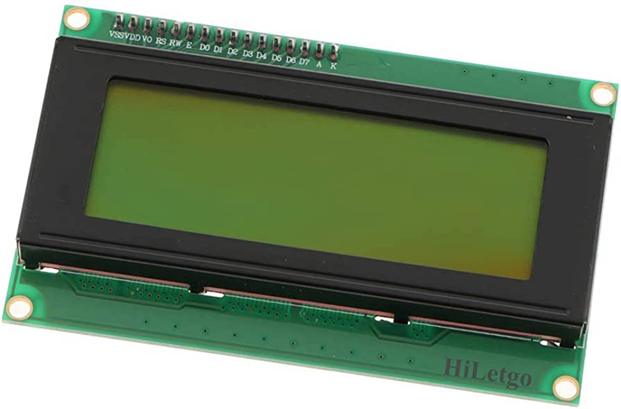

En el dysplay led tu puedes imprimir informacion, tanto letras como numeros, si no cuentas con un adaptador para solo usar 4 pines, se requiere hacer mucho mas cableado
import RPi.GPIO as GPIO
import time
# Define GPIO a LCD
LCD_RS = 26
LCD_E = 19
LCD_D4 = 13
LCD_D5 = 6
LCD_D6 = 5
LCD_D7 = 11
# Define algunas constantes del LCD
LCD_WIDTH = 16 # Ancho máximo de la pantalla en caracteres
LCD_CHR = True
LCD_CMD = False
LCD_LINE_1 = 0x80 # Dirección de la primera línea del LCD
LCD_LINE_2 = 0xC0 # Dirección de la segunda línea del LCD
LCD_E_PULSE = 0.0005 # Duración del pulso de habilitación
LCD_E_DELAY = 0.0005 # Retardo entre pulsos de habilitación
def lcd_init():
# Configurar los pines del GPIO
GPIO.setwarnings(False)
GPIO.setmode(GPIO.BCM)
GPIO.setup(LCD_E, GPIO.OUT) # E
GPIO.setup(LCD_RS, GPIO.OUT) # RS
GPIO.setup(LCD_D4, GPIO.OUT) # D4
GPIO.setup(LCD_D5, GPIO.OUT) # D5
GPIO.setup(LCD_D6, GPIO.OUT) # D6
GPIO.setup(LCD_D7, GPIO.OUT) # D7
# Inicializar el LCD
lcd_byte(0x33, LCD_CMD) # 110011 Inicialización del LCD
lcd_byte(0x32, LCD_CMD) # 110010 Inicialización del LCD
lcd_byte(0x06, LCD_CMD) # 000110 Configurar el modo de entrada
lcd_byte(0x0C, LCD_CMD) # 001100 Encender el display
lcd_byte(0x28, LCD_CMD) # 101000 Configurar el modo de 4 bits del LCD
lcd_byte(0x01, LCD_CMD) # 000001 Limpiar el display
time.sleep(LCD_E_DELAY)
lcd_byte(0x01, LCD_CMD)
def lcd_byte(bits, mode):
# Enviar byte al LCD
# Los bits se envían en dos grupos de 4 (nibble)
GPIO.output(LCD_RS, mode) # RS
# Nibble alto
GPIO.output(LCD_D4, False)
GPIO.output(LCD_D5, False)
GPIO.output(LCD_D6, False)
GPIO.output(LCD_D7, False)
if bits & 0x10 == 0x10:
GPIO.output(LCD_D4, True)
if bits & 0x20 == 0x20:
GPIO.output(LCD_D5, True)
if bits & 0x40 == 0x40:
GPIO.output(LCD_D6, True)
if bits & 0x80 == 0x80:
GPIO.output(LCD_D7, True)
# Pulsar habilitación
lcd_toggle_enable()
# Nibble bajo
GPIO.output(LCD_D4, False)
GPIO.output(LCD_D5, False)
GPIO.output(LCD_D6, False)
GPIO.output(LCD_D7, False)
if bits & 0x01 == 0x01:
GPIO.output(LCD_D4, True)
if bits & 0x02 == 0x02:
GPIO.output(LCD_D5, True)
if bits & 0x04 == 0x04:
GPIO.output(LCD_D6, True)
if bits & 0x08 == 0x08:
GPIO.output(LCD_D7, True)
# Pulsar habilitación
lcd_toggle_enable()
def lcd_toggle_enable():
# Pulsar la línea de habilitación
GPIO.output(LCD_E, True)
time.sleep(LCD_E_PULSE)
GPIO.output(LCD_E, False)
time.sleep(LCD_E_PULSE)
def lcd_string(message, line):
# Enviar cadena al LCD
message = message.ljust(LCD_WIDTH, " ")
lcd_byte(line, LCD_CMD)
for i in range(LCD_WIDTH):
lcd_byte(ord(message[i]), LCD_CHR)
# Inicializar el LCD
lcd_init()
# Mostrar "Hola mundo" en el LCD
lcd_string("Hola mundo", LCD_LINE_1)
# Limpiar el LCD después de 5 segundos
time.sleep(5)
lcd_byte(0x01, LCD_CMD)
# Limpiar los pines del GPIO
GPIO.cleanup()
Realizado por Christopher Eduardo Barrientos Guerra